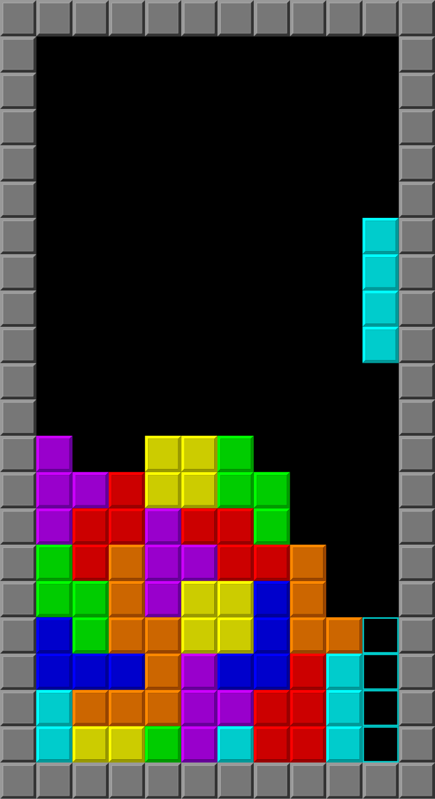
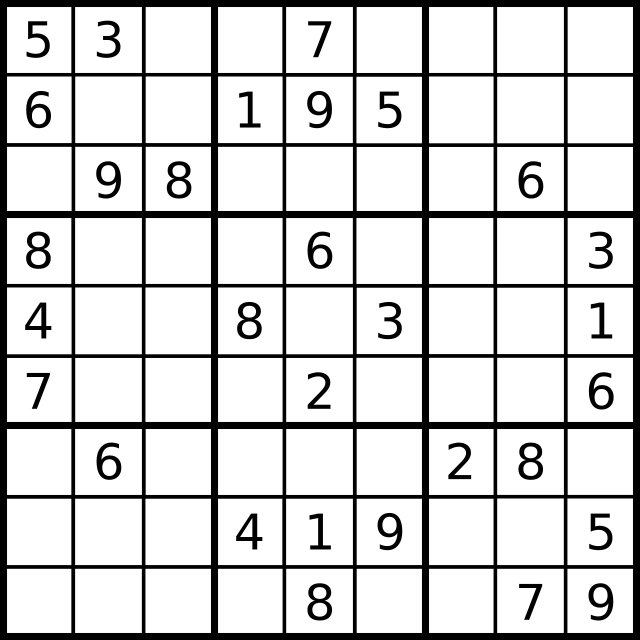

The puzzle game that i play
-
Tetris

-
Sudoku

This what i like playing the puzzle game that i like is a tetris when i am bored
Tetris (Russian: Тетрис[a]) is a puzzle video game created in 1985 by Alexey Pajitnov, a Soviet software engineer. In Tetris, players complete lines by moving tetrominoes, which descend onto the playing field. The completed lines disappear and grant the player points, and the player can proceed to fill the vacated spaces. Though the core gameplay has remained consistent, specific game mechanics between different Tetris variants have differed, with some changes becoming standard over time. Versions have been released for personal computers (PC), consoles, and mobile platforms. From wikipedia
This is a puzzle game that i like playing when i am bored, and also my friend at highschool before teach me the trick how to play sudoku and i am still remember that
Sudoku (/suːˈdoʊkuː, -ˈdɒk-, sə-/; Japanese: 数独, romanized: sūdoku, lit. 'digit-single'; originally called Number Place)[1] is a logic-based,[2][3] combinatorial[4] number-placement puzzle. In classic Sudoku, the objective is to fill a 9 × 9 grid with digits so that each column, each row, and each of the nine 3 × 3 subgrids that compose the grid (also called "boxes", "blocks", or "regions") contains all of the digits from 1 to 9. The puzzle setter provides a partially completed grid, which for a well-posed puzzle has a single solution. From wikipedia